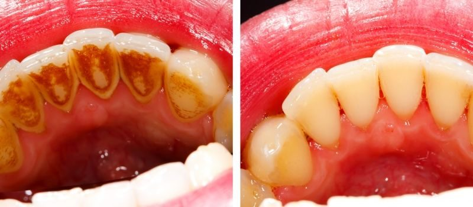

Check-ups and cleans
New patients of every age are welcome. For a first visit we recommend a full consultation and clean, so your dentist can see the whole picture and find small problems before they become big ones.

What happens at your visit
Not every step is needed every time. Your dentist will explain what they’re doing and why.
Teeth and gums examined
A careful look at every tooth, your gums and the soft tissues of your mouth.
Jaw joints checked
Your dentist assesses how your jaw moves and whether there are signs of strain or grinding.
X-rays, if needed
X-rays show what can’t be seen by eye, such as decay between teeth or below the gum line.
Photos of anything to watch
Intraoral photos let you see exactly what your dentist sees.
Scale, clean and polish
Hardened tartar is removed and teeth are polished smooth.
Topical fluoride
Applied to help strengthen tooth enamel.
A printed treatment plan
If anything needs attention, you’ll take home a plan so you can decide what to do next in your own time.
Prevention costs less, and hurts less, than repair.
Regular check-ups let your dentist find decay, gum disease and wear early, when treatment is simpler. Ask your dentist how often you should come in; it depends on your own teeth and history.
Why regular check-ups matter
Tooth decay and gum disease often develop without pain. By the time a tooth aches, the problem is usually larger and treatment more involved. A check-up gives your dentist the chance to spot early changes and deal with them simply.
A professional scale and clean removes calculus (hardened plaque) that a toothbrush can’t shift. Left in place, it irritates the gums and makes gum disease more likely.
Book a check-up sooner if you notice
- Gums that bleed when you brush or floss
- Sensitivity to hot, cold or sweet food
- A chipped tooth or a filling that feels rough
- Persistent bad breath or a bad taste
- A sore spot in your mouth that hasn’t healed after two weeks
Whether it suits you depends on an examination by your dentist.
Before and after your appointment
Follow the specific instructions your dentist gives you. They take priority over this general guidance.
- Before your visitNote any medicines you take and changes to your health, and any teeth that have been bothering you.
- At the appointmentTell your dentist if anything feels uncomfortable. They can pause or adjust what they’re doing.
- AfterwardsKeep brushing twice a day with fluoride toothpaste and cleaning between your teeth. Your dentist will suggest when to come back.
Questions about check-ups
Do I need X-rays every visit?
No. Your dentist decides when X-rays are useful, based on your history and what they see. They show decay between teeth and problems below the gum line that can’t be seen by eye.
Will the clean hurt?
Most people find a scale and clean comfortable. If your gums are inflamed or your teeth are sensitive, it can feel a little uncomfortable. Tell your dentist and they can go more gently.
Why do you give me a printed plan?
So you can see exactly what has been recommended and think it over in your own time. Nothing goes ahead until you’re ready.
Related treatments
Not sure which one you need? Your dentist will talk you through the options at your appointment.
See all servicesReady to book?
Call our Edmonton reception team and we’ll find a time that suits you. You can also email reception@southcairnsdental.com.au.